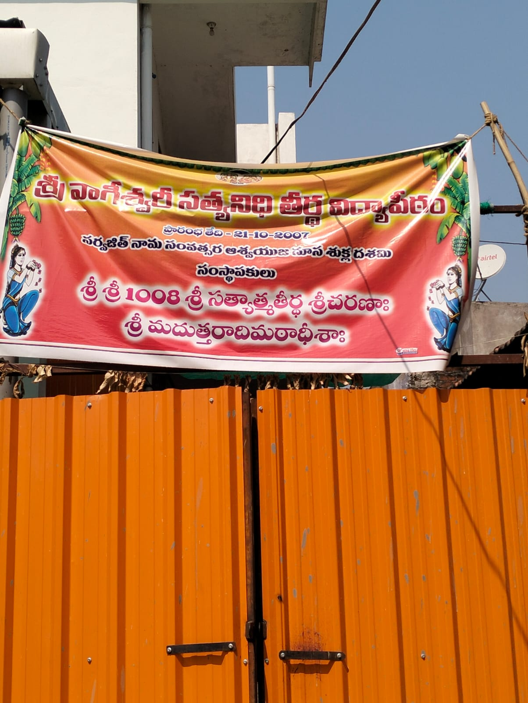

The Need for a Permanent Home
For over 17 years, the Vidya Peetham has operated from borrowed spaces — 15 years in Nanded and 2 years within the Srimad Uttaradi Math premises in Nizamabad. The time has come to construct a dedicated building for the Vedapathashala, where Vedic education along with Nyaya, Vyakarana, and Vedanta can flourish under one roof for generations to come.
Current Situation — Rented Premises
Currently the Vedapathashala is being conducted in a rented house. While the spirit of Vedic learning continues undiminished, the space limitations of a rented facility make it impossible to expand the curriculum, accommodate more students, or conduct large-scale Yagnas and dharmic programs. This is why a dedicated, purpose-built Vedapathashala is essential.

Current rented premises of the Vedapathashala
Veda Vidyarthulu studying in the current rented premises
Project Progress
Proposed Buildings & Facilities
Guru Nivasam
A dedicated residential building for Guru (teachers) who teach Vedas, Shastras, and guide students in their spiritual journey at the Peetham.
Vidyarthi Nivasam
Residential quarters for students (Vidyarthis) following the Gurukula system — providing a clean, spiritual environment for focused Vedic learning.
Atithi & Abhyagata Nivasam
Guest house for visiting devotees, scholars, and guests — honoring the sacred tradition of "Atithi Devo Bhava" (the guest is God).
Dharmika Karyakrama Mandapam
A spacious hall/shed for conducting dharmic programs, spiritual discourses (Pravachanams), celebrations, and community gatherings.
Goshala
A sacred cow shelter — integral to Vedic life and daily rituals. The Goshala will support the spiritual and practical needs of the Peetham.
Yagashala
A dedicated fire-ritual hall where Vedic Yagnas and Homams will be performed for Dharma Parirakshana (protection of Dharma) and Vishwa Shanti (world peace).
Vedapathashala Land — Video Tour
Watch the videos of the proposed Vedapathashala land where the dream of a permanent Vedic institution will come to life.
Vedapathashala Land — View 1
Vedapathashala Land — View 2

Founder with family & students at the proposed Vedapathashala land site
The Sacred 108 Ruk Samhita Yagam
A sacred Sankalpa (divine resolve) has been made to perform 108 Ruk Samhita Yagams in the Yagashala for Dharma Parirakshana (protection of Dharma) and Vishwa Shanti (world peace).
After the completion of the 108 Yagams, a further Sankalpa has been made to perform continuous daily Homam — one Adhyaya (chapter) per day — as a perpetual Vedic fire ritual in the Yagashala, ensuring the sacred flame of Dharma burns eternally.
This continuous Yagna practice will make the Vidya Peetham a unique center where Vedic fire rituals are performed without interruption, contributing to the spiritual welfare of the entire world.
Be a part of this sacred mission — sponsor a Yagam or contribute to the Yagashala construction.
Support the Yagashala